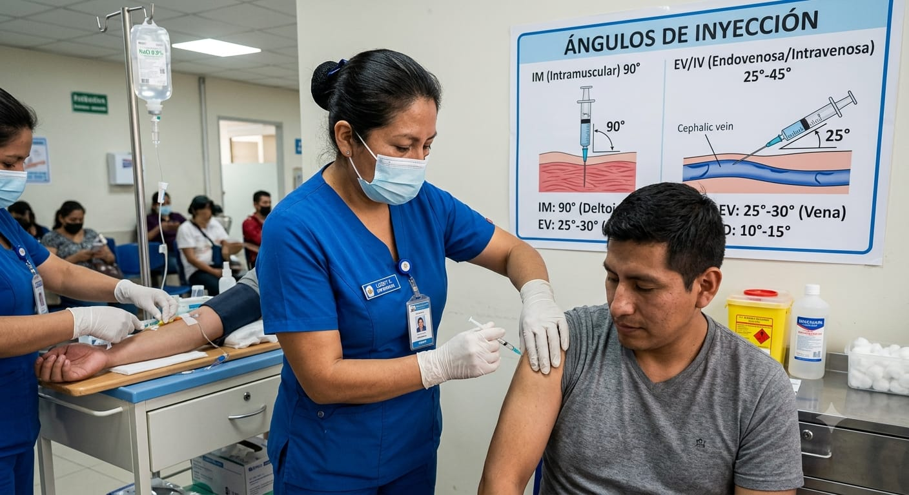
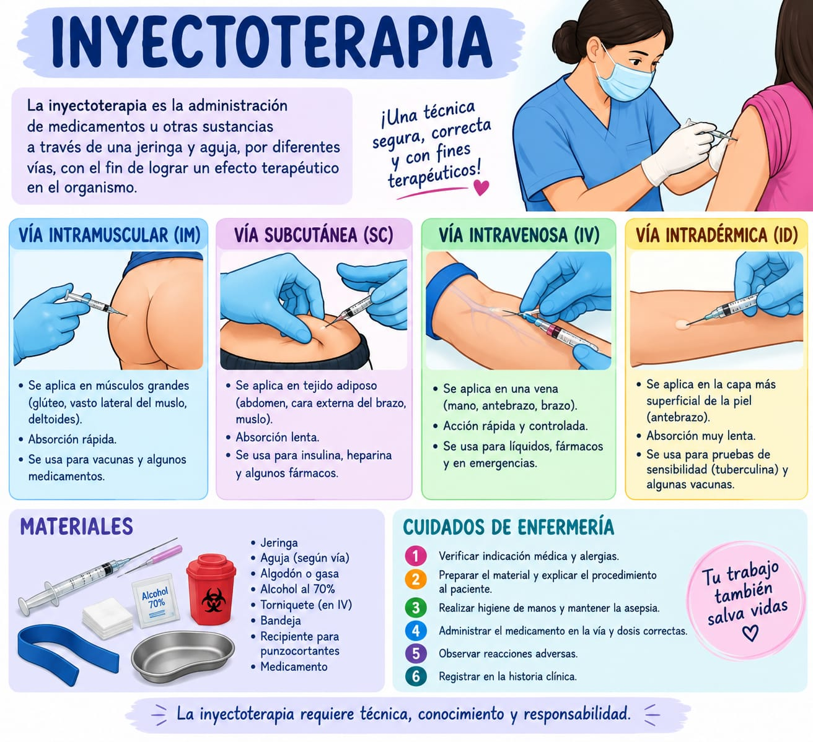

Higiene de manos
El lavado de manos se realiza en cinco momentos definidos por la OMS durante la atención al paciente, sin excepción.
Antes del contacto con el paciente
Al aproximarse, previo a tocarlo.
Antes de una tarea aséptica
Antes de preparar o administrar el inyectable.
Después del riesgo de exposición a fluidos corporales
Incluso si se usaron guantes.
Después del contacto con el paciente
Al finalizar el procedimiento.
Después del contacto con el entorno del paciente
Camilla, superficies, equipo cercano.
Equipo de protección personal
Barrera mínima obligatoria antes de iniciar cualquier procedimiento de inyectoterapia.
Mascarilla
Cubre nariz y boca durante todo el procedimiento.
Guantes descartables
Un par por paciente, descarte inmediato tras el uso.
Mandil o uniforme clínico
Limpio, exclusivo del área de atención.
Manejo seguro de material punzocortante
La aguja usada se descarta de inmediato; nunca se manipula dos veces.
De alta resistencia, con símbolo de bioseguridad, llenado máximo hasta 3/4 partes.
Nunca reencapuchar con las dos manos: es la causa más frecuente de pinchazo accidental.
Apenas concluida la inyección, sin dejar la aguja sobre superficies intermedias.
Preparación y administración segura
Tres condiciones del entorno que deben cumplirse antes de puncionar al paciente.
Superficie desinfectada y despejada, exclusiva para la preparación del inyectable.
Antisepsia del sitio de punción con movimiento único, de dentro hacia afuera.
Sin tocar la aguja ni el émbolo tras la desinfección de guantes.
Los correctos de la administración
Verificación obligatoria antes, durante y después de cada aplicación.
Paciente correcto
Nombre completo, fecha de nacimiento y número de historia clínica.
Medicamento correcto
Confirmar nombre del medicamento y principio activo.
Hora correcta
Respetar los horarios programados de administración.
Dosis correcta
Comprobar la dosis exacta a administrar.
Vía correcta
Verificar la vía de administración prescrita (IM, IV, SC, ID).
Fecha de caducidad vigente
Comprobar la fecha de vencimiento del medicamento.
Registro correcto
Registrar la administración inmediatamente después de realizarla.
Indicación correcta
Asegurar que el medicamento corresponda al tratamiento del paciente.
Verificar alergias
Consultar el historial de alergias antes de aplicar.
Respuesta correcta
Monitorear y evaluar los efectos del medicamento en el paciente.
Vías de administración
Ángulo de punción, sitios anatómicos y uso clínico de cada vía.
Intramuscular (IM)
Ángulo 90°- SITIOS
- Deltoides, vasto lateral (muslo), glúteo (cuadrante superoexterno).
- PROFUNDIDAD
- Tejido muscular.
- USO
- Vacunas, medicamentos oleosos, antibióticos.
Subcutánea (SC)
Ángulo 45°- SITIOS
- Cara externa del brazo, abdomen, muslo.
- PROFUNDIDAD
- Tejido subcutáneo.
- USO
- Insulina, heparina.
Intradérmica (ID)
Ángulo 10–15°- SITIOS
- Cara anterior del antebrazo.
- PROFUNDIDAD
- Dermis superficial.
- USO
- Pruebas de alergia, BCG.

Manejo de residuos hospitalarios
Segregación inmediata en el punto de generación, según código de colores MINSA.
Punzocortantes
Agujas, bisturís, ampollas. Contenedor rígido, de alta resistencia, símbolo universal de bioseguridad, llenado máximo 3/4 partes.
Biocontaminados
Jeringas sin aguja, gasas, algodones con sangre o fluidos. Bolsa roja, cierre hermético, impermeable.
Comunes
Envoltorios, papel, cartón, residuos de oficina. Bolsa negra, resistente, para almacenamiento temporal.
Segregación inmediata en el punto de generación, apenas se usa el material.
Traslado en coche cerrado hacia el área de almacenamiento intermedio.
Almacenamiento central en área restringida, ventilada y señalizada, hasta su disposición final.

Marco legal de referencia
NTS N° 144-MINSA/2018/DIGESA
Gestión Integral y Manejo de Residuos Sólidos en Establecimientos de Salud.
NTS N° 127-MINSA/2016/DIGESP
Salud Ocupacional en el Sector Salud.
D.S. N° 011-2019-TR
Reglamento de Seguridad y Salud en el Trabajo.
Ley N° 29783
Ley de Seguridad y Salud en el Trabajo.